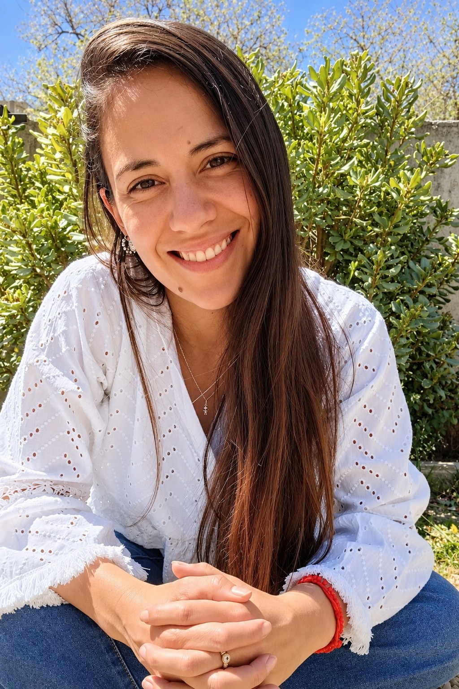

Para familias
Evaluación y acompañamiento psicopedagógico de niños y adolescentes, orientación a familias y construcción de estrategias para comprender y sostener los procesos de aprendizaje.
EVALUACIÓN · ACOMPAÑAMIENTO · ORIENTACIÓNEspacio para habitar el aprendizaje.
Te muestro cómo la Psicopedagogía está en todos lados: en la escuela, la familia, los vínculos, el juego y la vida cotidiana.

“Aprender es un proceso singular.
Acompañarlo también.”
Entiendo la psicopedagogía como una forma de acompañar los procesos de aprendizaje desde una mirada integral y singular.
El aprendizaje no sucede solamente en un consultorio o dentro del aula. Está presente en la familia, en los vínculos, en el juego y en esas pequeñas situaciones cotidianas en las que aprendemos todo el tiempo.
Acompaño a niños, adolescentes, familias, docentes e instituciones, buscando comprender cada trayectoria y construir herramientas que tengan sentido para cada persona y su contexto.
Mi trabajo se desarrolla en diferentes espacios que dialogan y se complementan.
Evaluación y acompañamiento psicopedagógico de niños y adolescentes, orientación a familias y construcción de estrategias para comprender y sostener los procesos de aprendizaje.
EVALUACIÓN · ACOMPAÑAMIENTO · ORIENTACIÓNEstrategias, co-visión y recursos para pensar propuestas de enseñanza, abordar dificultades y acompañar diferentes modos de aprender dentro del aula.
ESTRATEGIAS · INCLUSIÓN · RECURSOSAcompañamiento de trayectorias escolares, inclusión educativa, orientación a equipos, talleres y articulación entre escuela, familia y profesionales.
TRAYECTORIAS · TALLERES · ARTICULACIÓNPróximamente, materiales y herramientas nacidos de la práctica psicopedagógica y pensados para acompañar situaciones reales de aprendizaje.
Si querés realizar una consulta, conocer mi trabajo o pensar una propuesta, podés escribirme directamente.
Escribime por WhatsApp